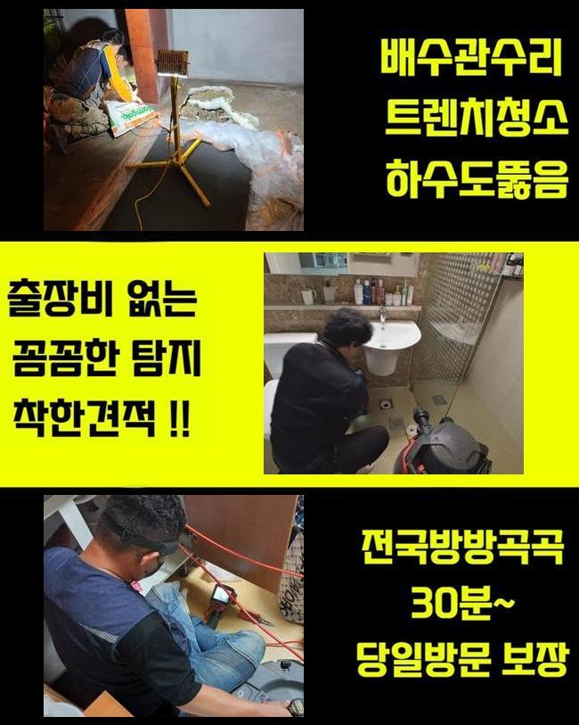
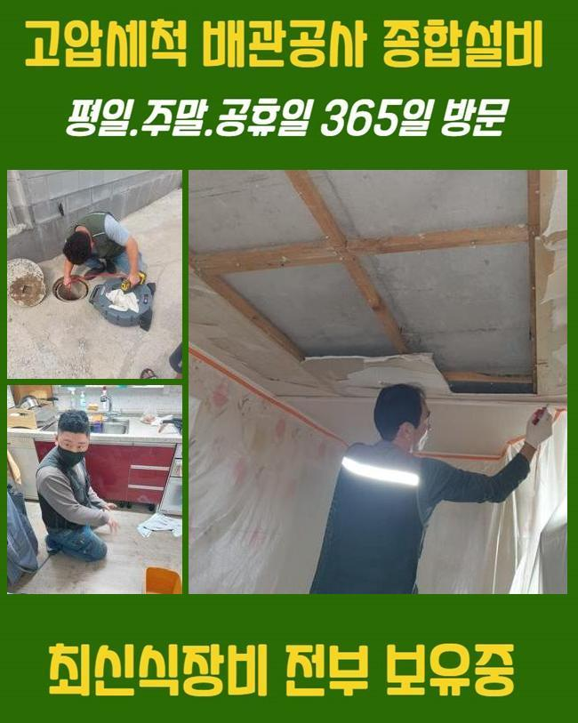
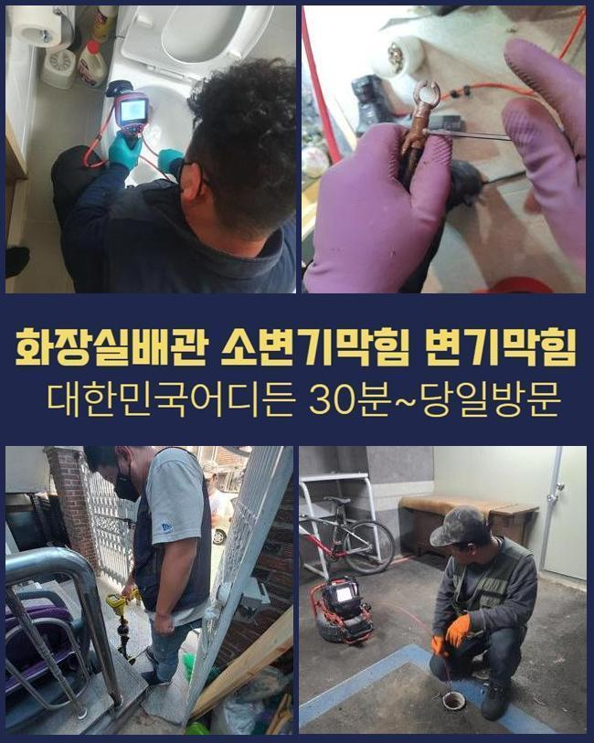
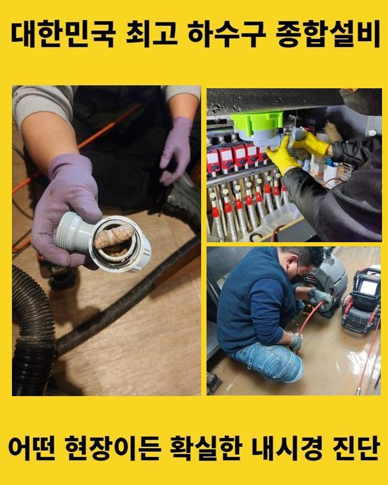
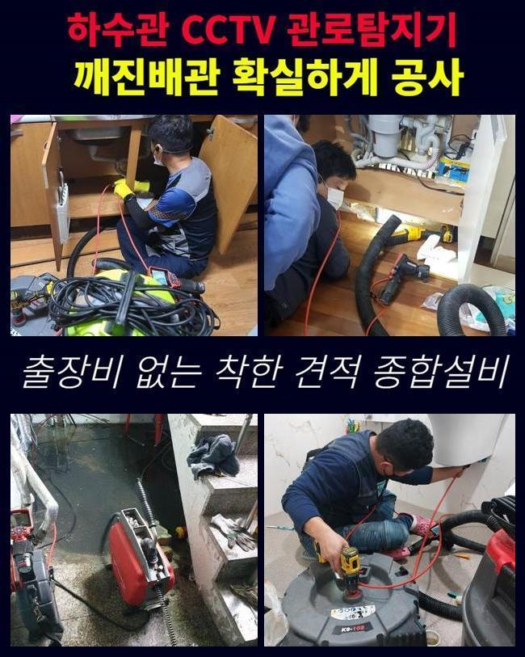
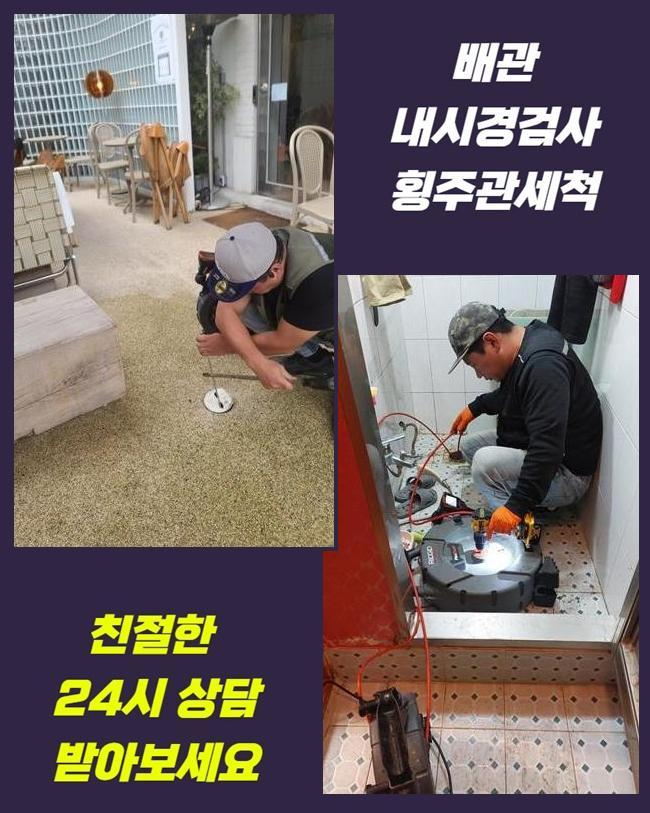
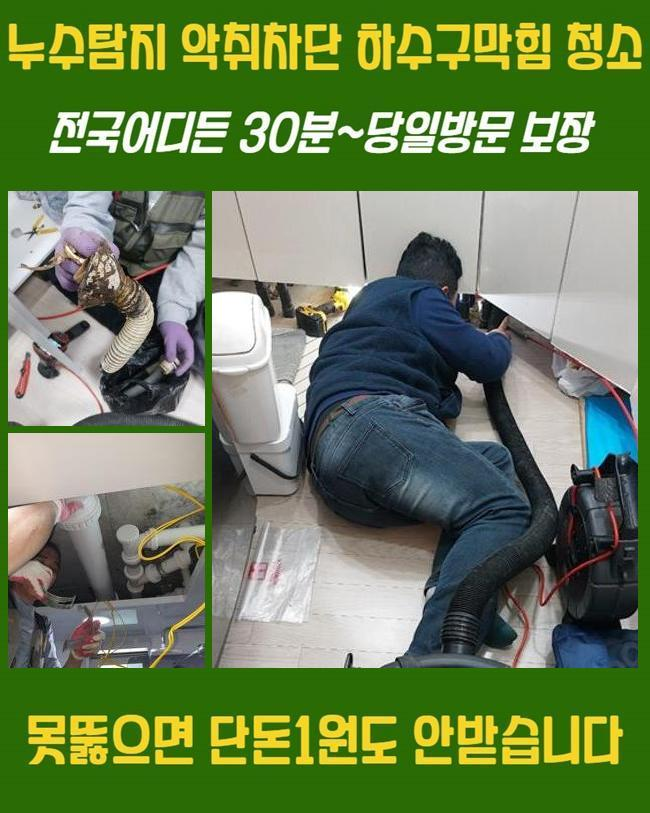

🏠 중랑구 면목동대변기뚫음 신내동 배수구뚫기 누수탐지
용인 목동 싱크대막힘 전문 시공 후기

📋 작업 개요
- 위치: 용인 목동, 목동, 용인
- 서비스 유형: 싱크대막힘, 변기막힘, 하수구막힘, 배관막힘, 누수수리, 역류해결, 뚫는업체, 배관청소, 고압세척, 설비공사, 배관보수, 악취차단
- 작업 일시: 2024. 11. 23. 17:24
- 업체명: 하수구수사대 (010-5615-2118)
🔍 문제 상황
중랑구 면목동대변기뚫음 신내동 배수구뚫기 누수탐지
싱크대 등에서 온전히 오수가 빠져나가지않으면 갑갑하고 자연적으로 사라지지않는 문제이므로 기술자를 수소문하게 됩니다
이번 글에서는 그것에 관계된 배관 수리 과정을 설명해드리겠습니다
우리팀이 출장간 의뢰인의 주거지의 경우엔 전주에 배수관계에 문제가 생겨서 시설물 이용에 문제상황을 촉발하고 있었죠
배관이 막혀버리면 오수가 원활히 빠져버리지 못해서 여러가지 냄새가 올라올수 있으며 골치아픈 사태를 촉발시킬수도 있죠
따라서 발빠른 대처가 시급하고 고통을 겪고 있으신 분들께서는 조속히 기술적인 처치를 받는게 좋아요
해당 사태를 처리하기 위하여 우선적으로 체크해봐야 되는건 배수부분 관계설비입니다
배수관 이용에 부적합한 버릇을 가졌다면 하수관의 메커니즘이 똑바로 돌아가지 않을수가 있어요
그러하기에 정기적인 세척과 점검으로 미연에 방지하는것이 좋답니다
시공할땐 배관카메라를 써서 심각한 막힘이 상존하는 지점을 꼼꼼히 점검하고 소제를 시작합니다
시공히 똑바로 실시되려면 정확한 점검이 불가결해서에요
오염물이 잔류하던 곳에서는 희석약품을 넣어서 깔끔히 처리되게끔 차근차근 세정을 실시했죠
세정을 하고 점차적으로 노폐물이 없어져나갔지만 총체적 정리까지는 상당량의 작업시간이 소요됐죠
기름슬러지와 석회물질 등을 없애려 분쇄장비를 가져왔습니다

🔎 원인 분석
💡 전문가 진단: 정밀 진단 장비를 사용하여 슬러지의 고착 여부를 판명하고 타격/세척 작업을 실시했습니다.
기계 내부에 체결된 체인으로 찌꺼기를 떨어뜨려 효과적으로 제거한답니다
잔류물이 벽면에 많이 누적되어 분쇄장비를 사용하여 청소계획을 세웠고 이때 음식찌꺼기 및 슬러지를 세척하기로 결단하였어요
방치해 버리면 비경한 사태가 유발되기도 해서 민첩한 대응이 불가결하다는 말씀을 드렸습니다
이러한 시공 과정에서는 이차고장이 안생기게 조심스러운 자세를 유지해야 됩니다
관로에 쇼크가 누적되면 해당위치로 오수가 쏠리고 균탁이 일어나기도 한답니다
그러하기에 그러한 도구를 가동할때는 숙달된 기술력이 요망되죠
거기에 더해 조속히 의뢰해서 찌꺼기들이 쌓이지 않게끔 만드는게 핵심이겠죠
누수가 생겼는지 알아보기 위해선 배수 속도를 살피고 내시경cctv로 배관 전반을 관측해야 해요
혹여나 그상황에서 크랙이 발견된 경우라면 보수공사 등 빠른 수리를 해나가야 되죠
우리팀은 이렇게 급작스럽게 나타나는 장애에 대처하는 의미로 전반적인 수리도구들을 매번 소지하고 다니죠
하수구에서 발현되는 이물질의 형태를 점검해보면 관련없는 슬러지가 표출될때가 많은데요
많은 인원이 쓰는 공간인 경우엔 한층 심각해질수 있어요
그러한 사태가 벌어지면 파이프에 자극이 들어가 누수까지 발현되기도 하기에 정밀한 조사가 불가결합니다
내시경설비로 고장지점을 검사하는 프로세스가 제외된다면 고장 원인을 탐색하지 못할수도 있죠

🔧 작업 과정
배관카메라로 파이프 안쪽을 들여다보며 여러 이물질과 끈적해진 석회성분으로 하수구 길목이 폐쇄됐다는걸 확인하였어요
이대로 둔다면 이물질이 넘쳐버릴 상황이라 즉각적인 수리가 요구되었죠
관로안은 엄청나게 오손되어 있었으며 음식물 다양한 이물들과 석회물질들이 쌓여 있었답니다
그로 인하여 오수가 적합하게 흘러가지 못해 막혀버린 것이었죠
그렇기 때문에 분쇄과정과 세척작업이 필수였습니다
안쪽의 이물을 조사하기 위해서 내시경기기를 넣었고 이에 적합한 처치를 행하였죠
관로 정체를 해소하려는 플랜을 짜고 작업을 실시했죠
이를 통해서 원활한 물흐름을 확보할수 있었어요
또 세척 업무간 발생하는 슬러지가 관로로 빠져들어 누설을 일으킬수 있어 미리 사전에 대비하는 것이 좋습니다
이것을 예방하려면 시공시 배수공을 차단해서 슬러지가 들어가지 않도록 조치하는게 좋습니다
해당 대응방법을 통하여 순탄하게 하수구 보존을 이행할수가 있는거죠
배관벽의 파열을 방지하려 차분하게 분쇄공정을 거치면서 배관카메라를 활용하여 이물이 집약된 곳을 발견했어요
배관 밑부분엔 고착화된 석회물질이 있었으며 그것을 내팽개쳐버린다면 역류상황까지 나타날 것이란걸 추정할수 있었습니다
저희는 조심히 찌꺼기를 들어내고 관로를 세척하여 배수가 원활히 작동되게 하였어요
이렇게 순차적인 시공을 토대로 설비의 성능을 유지하려는 자세가 이어져야 할것입니다
전체적 세정을 통하여서 문제들을 소멸시키고 차후 발생할수 있는 트러블도 예방할수 있었답니다
의뢰자께선 본질을 알아내고 결과치를 도출하는 단계가 핵심이라는 사실을 느꼈다고 하시네요
효과적으로 시공을 이어나가려면 샤프트기계를 활용이행해야 됩니다
해당되는 기계가 마련되지 않는 경우엔 찌꺼기를 온전히 소멸시키기 어려우며 몇달뒤에 또다시 막혀버릴수있기 때문입니다
석션기기도 필수적 기능을 도맡고 있다는걸 설명드립니다
관로 내부의 정체는 약하게라도 목도되었다면 자체적으로 사라지기 힘들어요
그러므로 주기적인 진단과정을 수행하여 트러블을 방예하고 발발한 문제들은 속히 대응하여 해결이행해야 됩니다


✅ 작업 완료
그러면 관로에서 발생한 불이익을 최소화할 수 많은데요
분리배출을 꼼꼼히 해나가고 위생적인 환경을 관리한다면 편안한 일상생활을 누리실수 있답니다
저희들은 고객님의 요청에 의해서 조속히 날을 정한다음 방문드리고 있죠
배수관이 왜 막혔는지 따지지않고 수준높은 도구들과 테크닉으로 공사를 진행한다는걸 알립니다
갑작스럽게 관로에 장애가 발발했다면 언제든지 의뢰 부탁드립니다
명확하게 처리해드리도록 할게요




⚠️ 베란다 누수 및 방수 관리 방법
- ✅ 비가 많이 올 때 창틀 주변이나 아래층 천장에 얼룩이 생기는지 정기적으로 확인해 보세요.
- ✅ 우수관 주변 실리콘 마감이 들뜨거나 깨진 틈새가 있는지 손상 여부를 수시로 체크하세요.
- ✅ 베란다 바닥 타일의 줄눈(메지)이 소실되면 그 틈으로 물이 침투하여 누수가 유발됩니다.
- ✅ 누수 의심 증상 발견 시 방치하면 아래층 손실이 커지므로 즉시 전문가의 진단을 받으십시오.
💡 핵심 정리
- 확실한 장비 작업(내시경 점검 및 샤프트 스케일링)으로 원인을 뿌리 뽑습니다.
- 작업 후 1년 이내에 동일한 부위 재발 시 100% 무상 A/S 서비스를 보장합니다.
- 서울 · 경기 · 인천 전 지역에 24시간 언제든 긴급 출동할 수 있도록 항시 대기 중입니다.
❓ 자주 묻는 질문 (FAQ)
🚨 용인 목동 싱크대막힘 문제로 고민이신가요?
정확한 원인 진단과 확실한 시공으로 재발 없는 해결을 약속드립니다.
24시간 긴급 출동 | 서울 · 경기 · 인천 전지역 | 1년 내 재발 시 무상 A/S